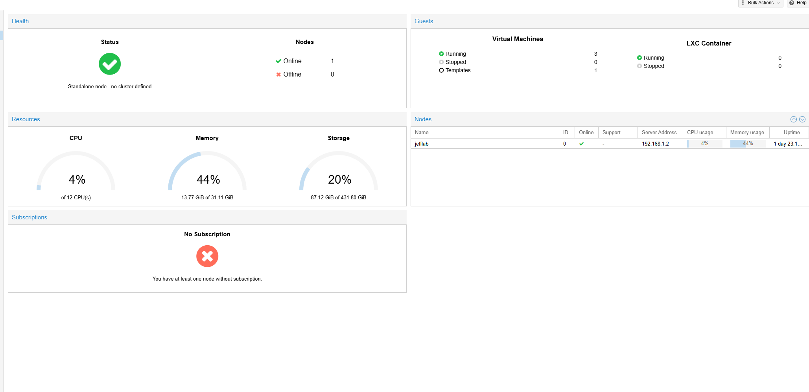
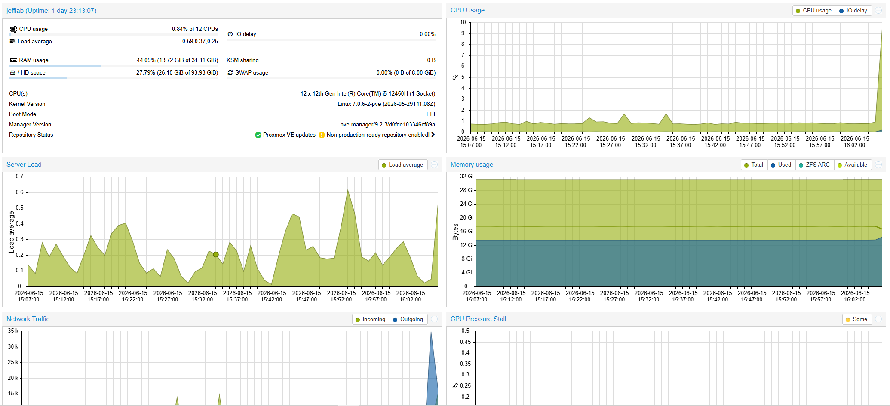
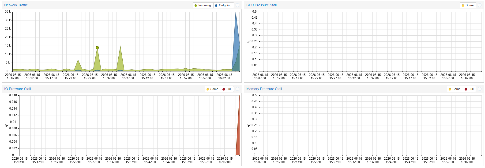
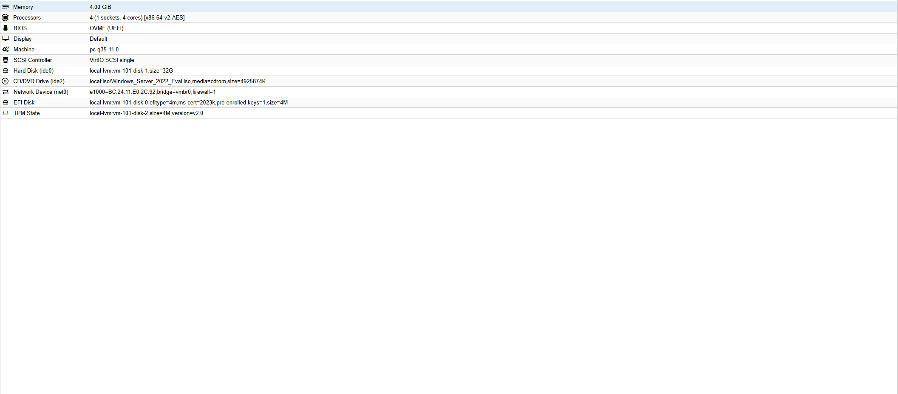
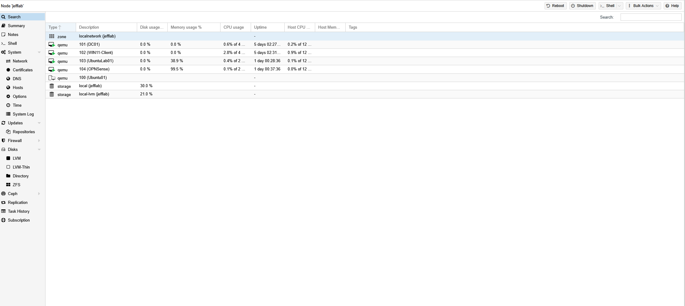

Proxmox Virtualization Lab
Home lab virtualization environment using Proxmox VE to host Windows Server, Windows client, and Linux virtual machines for infrastructure testing.
Project Overview
This project demonstrates a self-hosted virtualization lab designed to practice system administration, Windows Server management, Active Directory testing, Linux administration, networking, and VM resource management.
Architecture Diagram
Physical Proxmox Host
|
|-- Windows Server 2022 VM
| |-- Active Directory
| |-- DNS
|
|-- Windows 11 Client VM
| |-- Domain Join Testing
| |-- User Authentication Testing
|
|-- Ubuntu Server VM
|-- Linux Administration
|-- Service Testing
Network:
LAN Gateway
|
Proxmox vmbr0 Bridge
|
Virtual Machines
Host System
- Installed Proxmox VE on dedicated hardware
- Assigned a static management IP address for Proxmox web access
- Created and managed virtual machines through the Proxmox web interface
- Allocated CPU, memory, and storage resources for each virtual machine
- Used Proxmox to monitor VM status, uptime, and resource usage




Virtual Machine Environment
Multiple virtual machines were created to simulate a small business lab environment for server administration and endpoint testing.
- Deployed Windows Server 2022 virtual machine
- Deployed Windows 11 client virtual machine
- Deployed Ubuntu Server virtual machine
- Configured VM storage, CPU cores, RAM, and network adapters
- Used VMs to test domain services, Linux services, and network connectivity

Network Connectivity
The lab uses the default Proxmox virtual networking configuration to provide network access to the virtual machines. Proxmox was assigned a static management IP address, and VM connectivity was validated between the Windows Server domain controller and Windows client machine.
- Assigned Proxmox a static IP address for management access
- Used default Proxmox VM network settings for initial lab connectivity
- Validated communication between the domain controller and Windows client VM
- Confirmed Windows client connectivity to domain services
- Troubleshot DNS and domain join connectivity during lab setup

Windows Server & Active Directory Testing
The Proxmox lab was used to host Windows Server and Windows client systems for Active Directory, DNS, authentication, and domain-join testing.
- Hosted Windows Server 2022 for domain services testing
- Connected Windows 11 client VM to the lab domain
- Tested DNS resolution and domain controller discovery
- Validated domain authentication using lab user accounts
- Troubleshot client connectivity and domain join issues


Technologies Used
- Proxmox VE
- Windows Server 2022
- Windows 11
- Ubuntu Server
- Active Directory
- DNS
- Linux Bridge Networking
- Virtual Machines
- System Administration
Security & Administration
- Kept Proxmox management access limited to the internal network
- Used separate virtual machines for server, client, and Linux testing
- Maintained separation between lab workloads and public-facing services
- Used screenshots instead of exposing administrative interfaces publicly
Lessons Learned
- Configured and managed Type 1 hypervisor infrastructure
- Troubleshot bridge networking and VM connectivity
- Allocated CPU, memory, and storage resources across multiple VMs
- Tested Windows domain services in an isolated lab environment
- Improved understanding of virtualization used in system administration roles